Воздухоочиститель-циркулятор BORK A804
В условиях интенсивного темпа развития современного общества, наличие в доме эффективной многоступенчатой системы очистки воздуха, является жизненной необходимостью. Важной составляющей высокого качества работы воздухоочистителя, является не просто способность очистки, но и возможность максимальной циркуляции воздушных потоков в помещении с целью быстрой и эффективной очистки воздуха.
Дизайн
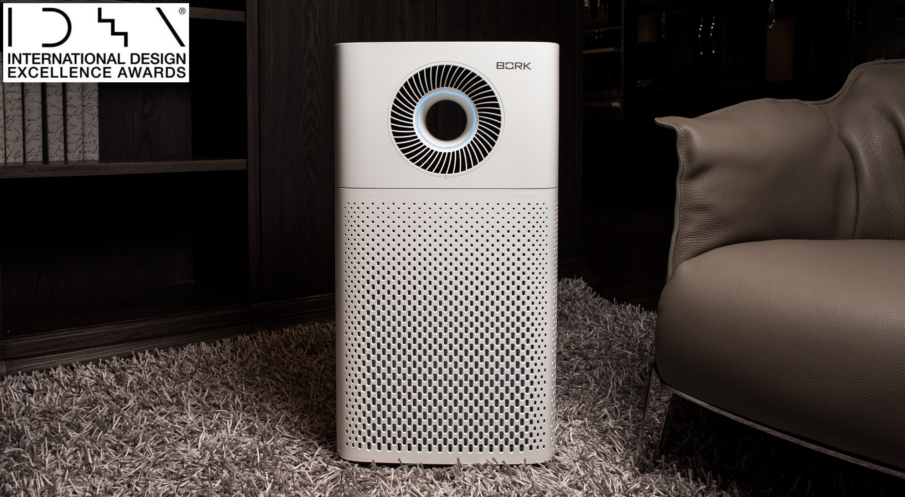За выдающийся дизайн и инновационное сочетание функций двух приборов для быстрого и эффективного очищения воздуха, воздухоочиститель BORK A804 удостоен престижной награды International Design Excellence Awards.
Сверхбыстрая циркуляция
Благодаря режиму быстрой циркуляции (RAPID CIRCULATION), в течении 10 минут вы не только очистите, но и распределите свежий воздух по всему объёму помещения.
Очистка воздуха и распределение воздуха происходит в 3 этапа:

SURROUND (3 минуты). мульти-поток - поток воздуха идет из циркулятора и верхнего блока подачи воздуха одновременно.
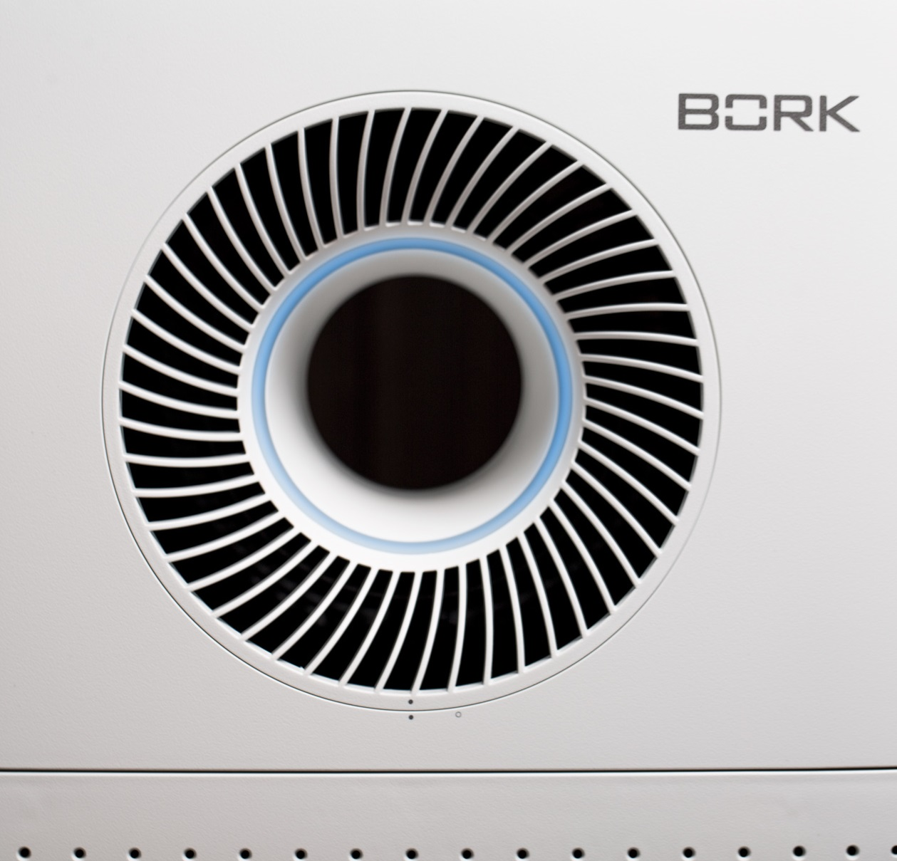AIR JET (2 минуты). сфокусированный поток - поток воздуха идет из циркулятора.
TURBO (5 минут) быстрый поток вверх – максимальная скорость воздушного потока.
Система фильтрации

Предварительный фильтр
Этот фильтр удаляет сравнительно большие частицы пыли или плесени, человеческие волосы и шерсть домашних животных.
Специальный фильтр ALLERGIST
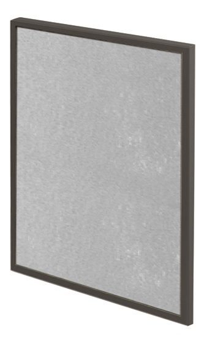Фильтр ALLERGIST позволяет улавливать мельчайшие частицы пыли, являющейся основным аллергеном. Вместе с пылью задерживаются также вирусы, пыльца, частицы шерсти и другие аллергены.
Угольный фильтр
Угольный фильтр устраняет летучие и полулетучие органические соединения, включая вредные газы, резкие запахи. Структура фильтра состоит из сот, что позволяет обеспечить максимальную эффективность очистки воздуха на всей поверхности фильтра.
HEPA фильтр
Фильтр TRUE HEPA улавливает микрочастицы размером 0,3 мкм до 99,97%. Только 3 частицы из 10.000 могут пройти через фильтр. Толщина человеческого волоса ≈ 100 мкм 1 мкм = 0,001 мм.
Антибактериальная пропитка уничтожает микробы и плесень как на поверхности фильтра, так и внутри него, обеспечивая продолжительный срок эксплуатации.
Сменные специальные фильтры
Вы можете приобрести отдельно и установить любой из указанных ниже специальных фильтров.
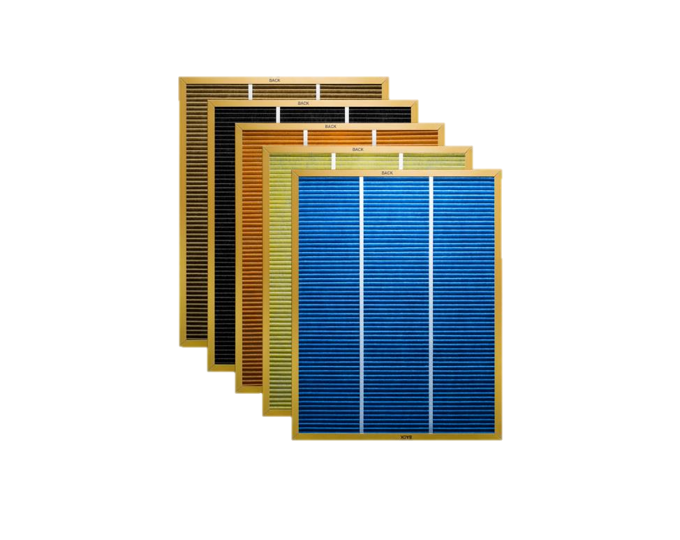Панель управления
Автоматический режим
Автоматический контроль скорости потока воздуха в соответствии с уровнем загрязнения, определяемым датчиком качества воздуха, с целью более эффективной очистки. Этот режим подходит для использования в качестве основного.
Индикация качества воздуха
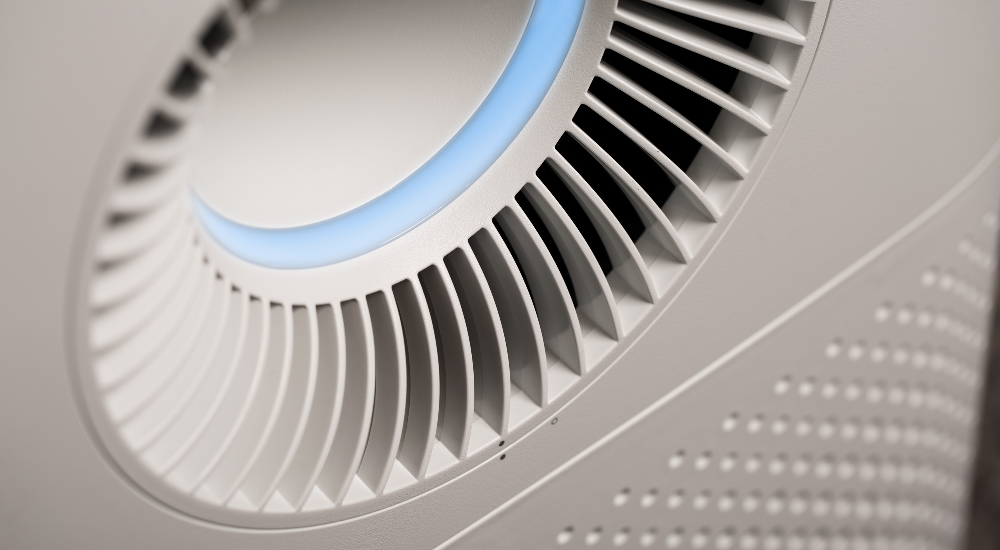В случае необходимости цветовую индикацию можно отключить в любой момент нажатием на соответствующую кнопку.
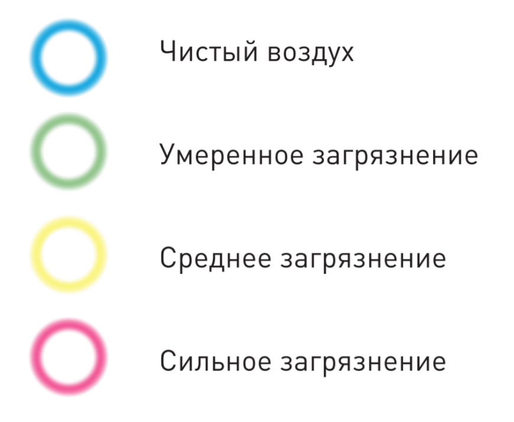Режим SILENT
Данный режим создан для вашего спокойного сна при минимальном уровне шума и световой индикации. При работе в автоматическом режиме переход в режим SILENT осуществляется автоматически с помощью датчика света.
Чувствительность датчика качества воздуха
Воздухоочиститель должен находиться в каждой комнате квартиры.
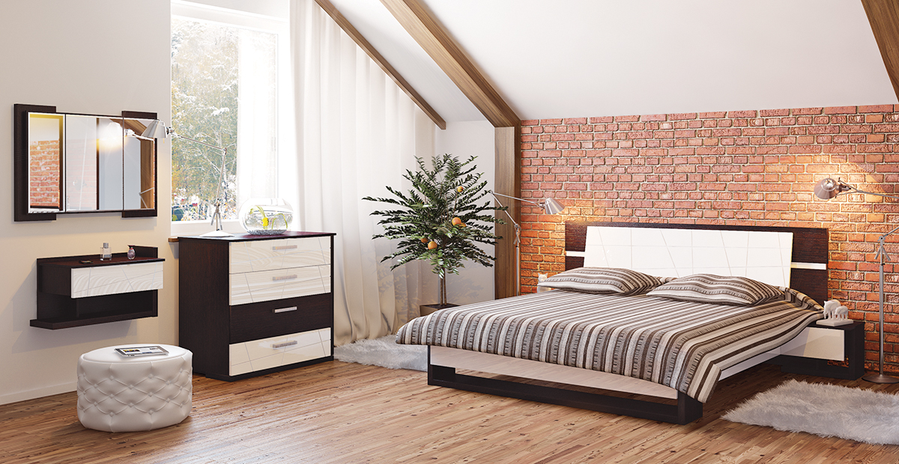Больше всего времени человек проводит в спальне. Чтобы во время сна дышать чистым воздухом рекомендуется установить датчик на самый чувствительный уровень.
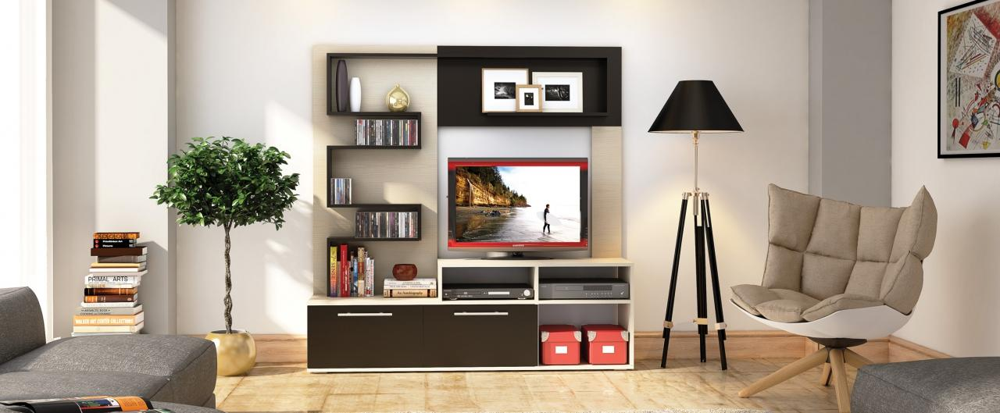Второе место, с точки зрения пребывания человека, занимает гостиная. Тут имеет смысл выбрать среднюю настройку чувствительности датчика.
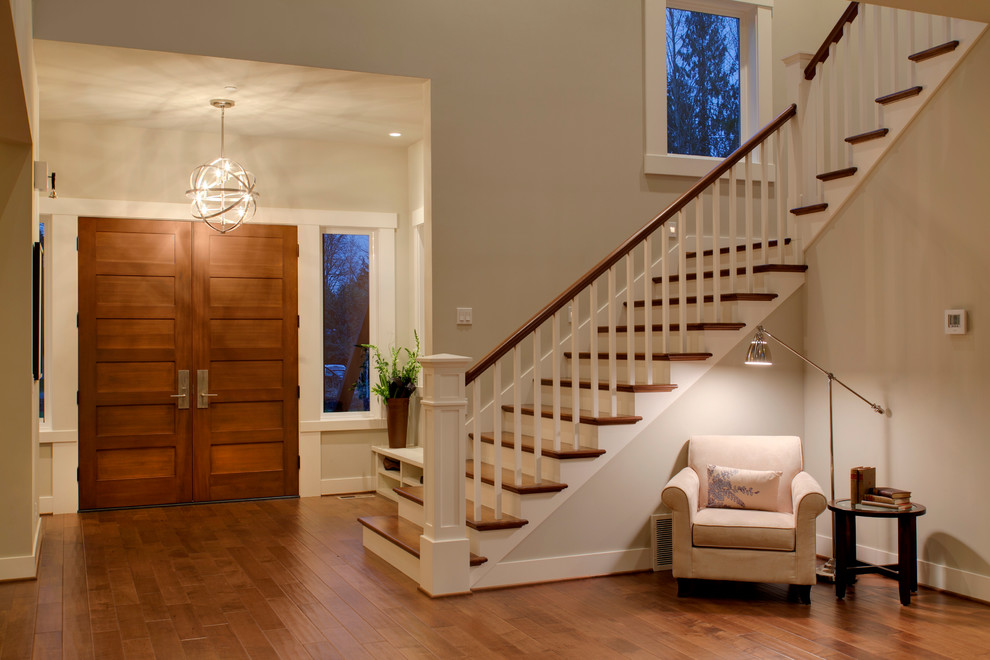И наконец, в прихожей и кухне можно выбрать самый низкий уровень чувствительности.
Если человек, приобретающий воздухоочиститель страдает от аллергии, то датчик загрязнения воздуха должен быть установлен на максимальную чувствительность, независимо от комнаты, в которой установлен прибор.
Аргументы для продажи
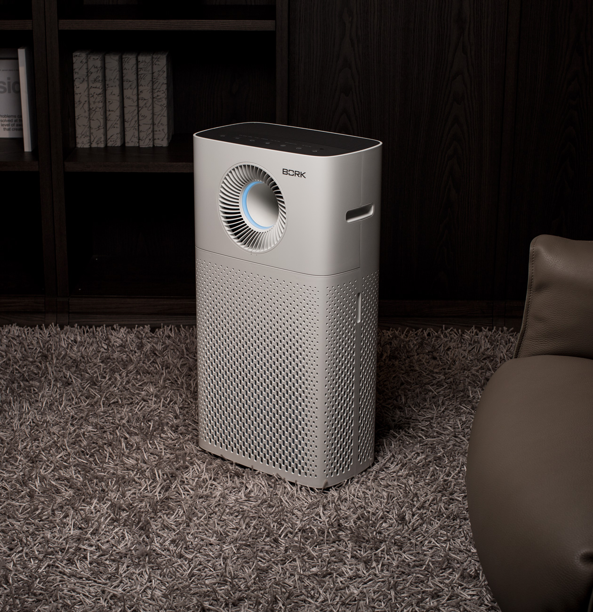- Инновационное сочетание функций двух приборов для быстрого и эффективного очищения воздуха
- 4 специализированных воздухоочистителя в 1. Специальные фильтры
- Удобное, простое и понятное управление
- Автоматические режимы работы
- Автоматический переход в режим SILENT. Датчик света
- Датчик качества воздуха с настройкой чувствительности
- Отключение станции по таймеру.
Технические характеристики
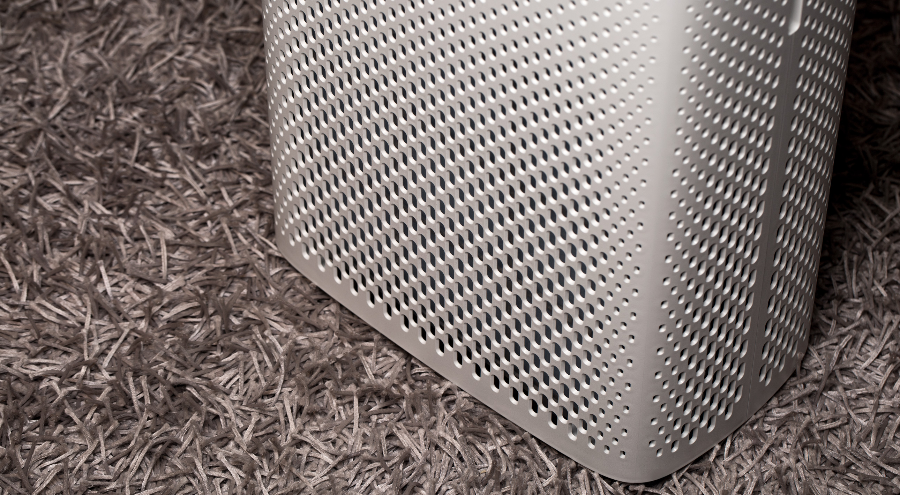
Мощность: 65 Вт
Производительность: 492 куб.м/ч
Площадь очищения: 50 кв.м
Вес: 12 кг
Срок гарантии: 1 год
Материал корпуса: Пластик
Страна производства: Корея